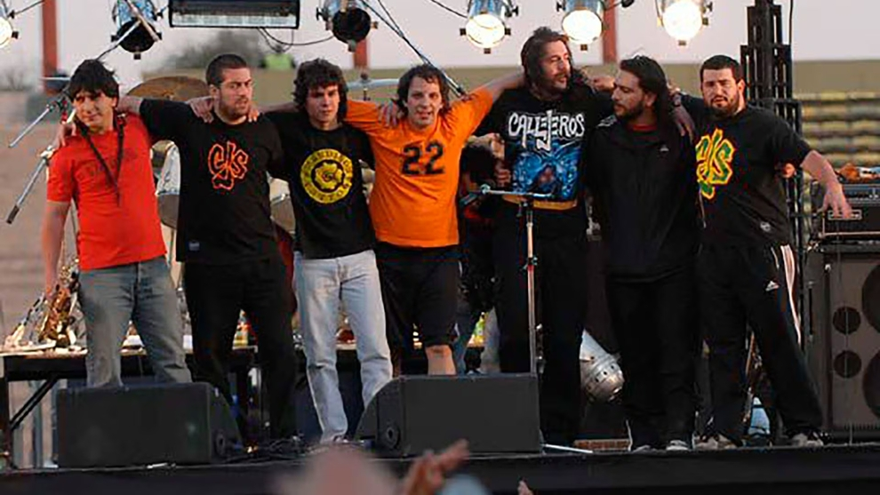
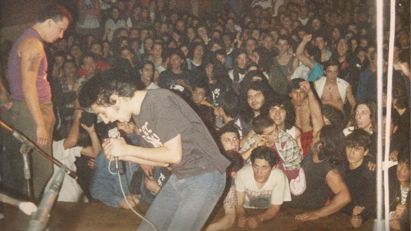

Otro de mis hobbies más significativos es la música. Desde hace varios años, ha sido una parte importante de mi vida, no solo como oyente, sino también como alguien que disfruta activamente de tocar instrumentos. En particular, siento una gran afinidad por la guitarra, que es el instrumento que más he explorado y con el que me siento más cómodo. Me gusta mucho tomar canciones que me inspiran o que tienen un significado especial para mí e intentar replicarlas, ya sea aprendiendo sus acordes, sacando los solos de oído o simplemente tocándolas de forma libre para relajarme.
 Top 5 artistas favoritos
Tambien me gusta meterme a páginas como Soundcloud o Bandcamp para descubrir artistas nuevos, sobre todo aquellos que no son tan conocidos. A veces encuentro propuestas muy buenas que no suenan en ningún otro lado. Mi género favorito es el rock en español, me gusta por su estilo y por las letras, que muchas veces dicen cosas con las que me identifico. Aun así, trato de no quedarme solo con un tipo de música. Escucho otros géneros también, porque creo que conocer distintos estilos ayuda a abrir la mente y te hace crecer, tanto personalmente como en lo creativo.
| Nombre | Genero | Album favorito |
|---|---|---|
| Seguimos Perdiendo | Punk Rock | Sendero a la cirrosis |
| Bladee | Experimental | Eversince |
| 2 Minutos | Punk Rock | Valentin Alsina |
| Yung Beef | Trap | ADROMICFMS IV | Callejeros | Rock Barrial | Presion |